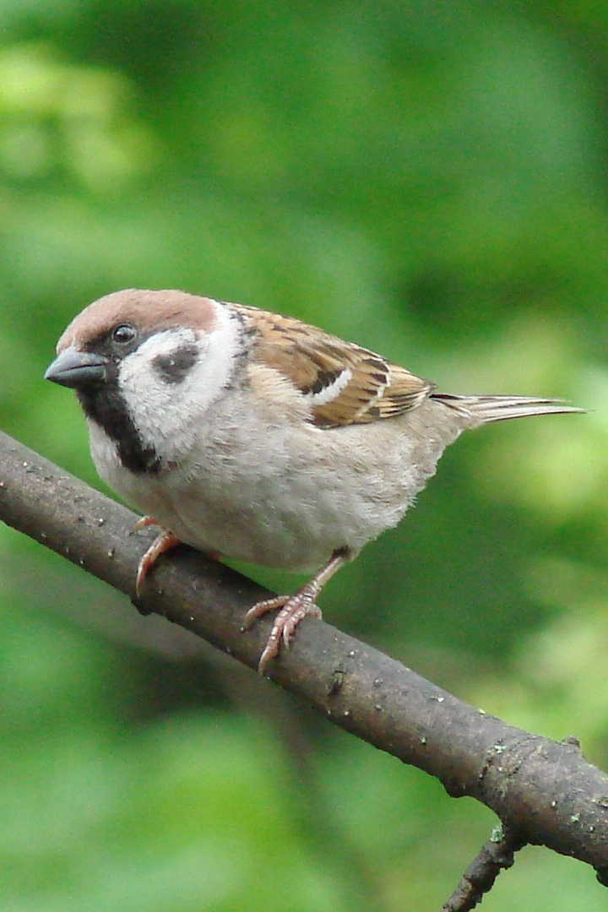

«Ты правильно делаешь, что советуешься. А то вы, кожаные, обычно сначала творите херню, а только потом думаете».
— Джезеф Игорю во время создания углеродной брони.
Джезеф Каганович-младший — говорящий воробей-аналитик, учёный-эколог и специалист по систематическому мониторингу территории. Является союзником Игоря Меркулова, с которым состоит в «научном союзе». Джезеф обладает острым умом, глубокими познаниями в биологии и физике, а также крайне скверным характером и богатым словарным запасом нецензурной лексики.

×
Джезеф Каганович-младший
Полное имя:Джезеф Каганович-младший
Вид:Воробей
Пол:Мужской
Возраст:Неизвестен
Статус:Жив
Род занятий:Учёный-эколог, инженер-аналитик, оперативник разведки
Отношения:Джезеф Каганович-старший (отец), Игорь Меркулов (союзник по «научному союзу»)
Первое появление:Глава 7
Последнее появление:Глава 24
Биография и взаимодействие с Игорем
Знакомство
Игорь впервые столкнулся с Джезефом в лесу, пытаясь практиковать ментальное воздействие на животных. Он случайно подключился к «зашифрованному каналу», на котором лесные птицы ведут переговоры. Джезеф отреагировал на вторжение крайне агрессивно, осыпая Игоря оскорблениями (называя его «кожаным» и «биомусором»). Конфликт удалось уладить с помощью упаковки несолёных семечек, после чего воробей предложил Игорю сделку: информационная поддержка в обмен на помощь в сложных математических расчётах.
Расчёт индекса Шеннона
Джезеф привлёк Игоря к обработке данных о динамике численности жуков, инсоляции и стрессе у белок. Игорь, используя ноутбук прямо на поляне, вычислил для птичьего сообщества индекс Шеннона (показатель биоразнообразия). В ходе этой работы воробей представился полным именем, категорически запретил называть себя «Джеком» и признал в глубокой ненависти к голубям, чей словарный запас ограничен тремя словами. По итогам работы Джезеф официально признал Игоря «не таким уж и долбоёбом».
Попытка создания вечного двигателя
Когда Игорь попытался создать энергетическую установку, используя магию огня как источник нагрева для паровой турбины, Джезеф выступил в роли критикующего консультанта. Он язвительно высмеивал попытку нарушить законы термодинамики и указывал Игорю на ошибки в полярности при сборке схемы, используя при этом подчеркнуто пафосный и оскорбительный тон. Несмотря на то что установка частично заработала, эксперимент провалился, так как магия Игоря требует его постоянной концентрации и энергии, что подтверждает скепсис воробья.
Создание углеродной брони
Игорь обратился к Джезефу за советом по материаловедению для создания индивидуальной защиты. Воробей отговорил его от опасных идей с титаном (из-за дефекта массы) и углеродными нанотрубками (из-за токсичности). Вместо этого он предложил биомиметическую многослойную углеродную структуру, основанную на принципе панциря жука.
Углеродная база: Джезеф привёл Игоря на поляну с обгоревшими деревьями (остатками противопожарного кольца, которое животные организовали сами), чтобы тот мог брать углерод из мертвой древесины, не вредя лесу.
Инженерное решение: Именно Джезеф подсказал Игорю использовать принцип «чешуек» с перекрытием для защиты суставов, что позволяет сохранить мобильность без использования сложных шарниров.
Личность и характер
Джезеф — выраженный мизантроп (в отношении людей) и интеллектуал. Он считает человечество «биомусором», но признаёт технические навыки Игоря полезными для «лесной науки».
Научный подход: Он не верит в мистику и требует от Игоря строгого разделения между наукой и магией.
Лидерские качества: Во время лесного пожара он координировал действия разных видов (бобров, енотов, сорок и волков) для спасения леса.
Репутация: Джезеф очень заботится о своём статусе среди животных и боится, что его «научная карьера отправится в жопу», если кто-то узнает о его сотрудничестве с человеком.
Интересные факты
Семья: Его отца зовут Джезеф Каганович-старший, что подразумевает наличие некоей птичьей династии исследователей.
Предпочтения: Любит семечки, но строго без соли.
Знания: Свободно оперирует латинскими названиями видов (например, Turdus pilaris) и физическими терминами.
Этическое влияние: Именно Джезеф открыл Игорю глаза на то, что магия воды истощает окружающую среду, забирая влагу у растений и почвы, что заставило героя пересмотреть использование своих сил.
Политическая позиция: Противник строительства НПЗ компанией «ТехноСтройПлюс», так как это угрожает экологии леса.
Этот сайт делает вид, что использует cookie, но на самом деле просто показывает вам ебучее всплывающее окно